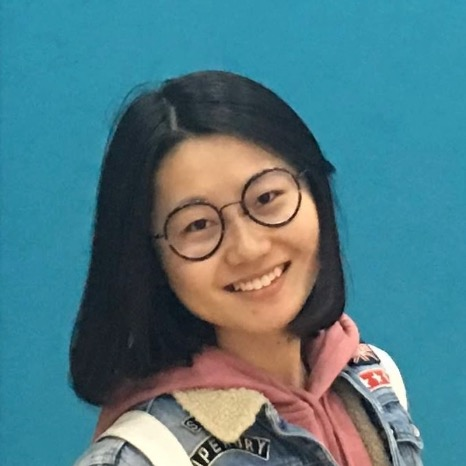

Fundamental Challenges and Real-World Applications
Social simulation plays an important role in domains where human studies face practical constraints, such as sociology, psychology, medicine, and education. Conventional social simulations often relied on rule-based, statistical, or mechanistic models with predefined assumptions, which can oversimplify the complexity, diversity, and context dependence of real-world human behavior.
Recent advances in Large Language Models (LLMs) offer a promising opportunity by enabling agents to interpret contextual information, perform flexible reasoning, and adapt their behaviors to evolving environments, thereby opening new frontiers for modeling human behavior, social interactions, and collective dynamics in support of controlled analysis, counterfactual reasoning, and decision support.
Despite these opportunities, developing LLM-agent-based social simulations also raises significant challenges — including how to model personas and domain knowledge; how to evaluate and analyze simulated behaviors; how to mitigate risks and ensure safety, ethics, and accountability, especially in error-sensitive domains; and how to build scalable infrastructure for large-scale and long-horizon simulations.
Themed "Fundamental Challenges and Real-World Applications", the second LASS workshop aims to bring together researchers and practitioners from diverse disciplines to explore how LLM agents can be more faithfully modeled, rigorously evaluated, safely governed, and effectively applied to address real-world problems in vertical domains — with careful consideration of their unique requirements, challenges, and practical limitations, thereby promoting human well-being and broader societal benefit.
Building on the success of LASS 2025 (CIKM 2025, Seoul) — which attracted around 25 participants, received 15 valid submissions (each with 2–3 reviews), accepted 8 papers, presented 3 LASS Outstanding Paper Awards, and recommended 3 papers for fast-track consideration to JCST — this second edition will further emphasize real-world vertical-domain applications, with stronger attention to expert knowledge, domain-specific safety and ethical requirements, and pathways toward responsible real-world deployment.
All deadlines are 23:59 Anywhere on Earth (AoE). Submissions closed on September 9, 2026. Acceptance notifications were sent on October 2, 2026. See the papers and the program.
By fostering dialogue among AI, NLP, HCI, and a broad range of vertical domains, LASS aims to advance LLM-agent-based social simulations that are technically faithful, safe, ethical, and responsive to the unique requirements of vertical domains. The call invited work on one or more of the following thematic axes:
Half-day workshop · November 8, 2026 · Rome, Italy. The formal program runs 09:00–12:30. Poster setup starts at 08:50.
We ask authors to come to the workshop in Rome if they can, and to put up a poster during poster setup (from 08:50). Oral presenters should bring a poster as well. An online meeting link will be posted on this page for those who cannot travel. Remote attendance is available, but in-person participation is what we hope for.
| 08:50 – 09:00 |
Poster Setup
Authors put up posters
|
| 09:00 – 09:10 |
Opening Remarks
Welcome, workshop introduction, and schedule overview
|
| 09:10 – 09:45 |
Keynote Talk 1
30-min talk + 5-min Q&A · Speaker to be announced
|
| 09:45 – 11:05 |
Oral Presentation Session
6 papers · 10 min talk + 3 min Q&A each
|
| 11:05 – 11:25 |
Coffee Break & Poster Session I
Coffee and the first poster discussion
|
| 11:25 – 11:30 |
Outstanding Paper Award
Award presentation
|
| 11:30 – 12:05 |
Keynote Talk 2
30-min talk + 5-min Q&A · Speaker to be announced
|
| 12:05 – 12:10 |
Closing Remarks
Brief wrap-up and thanks
|
| 12:10 – 12:30 |
Poster Session II
Second poster discussion
|
20 papers were accepted. Six will be presented orally, in the order below. Papers on the program, including the oral papers, should have a poster at the workshop. Please attend in person in Rome if you can. An online meeting link will be added here for remote participants.

AZWe thank the following program committee members for completing the peer review of LASS 2026 submissions.
The 1st Workshop on LLM Agents for Social Simulation was held at CIKM 2025, Seoul, South Korea. 8 papers were accepted from 15 submissions, including 3 LASS Outstanding Paper Awards.
View LASS 2025 Website →